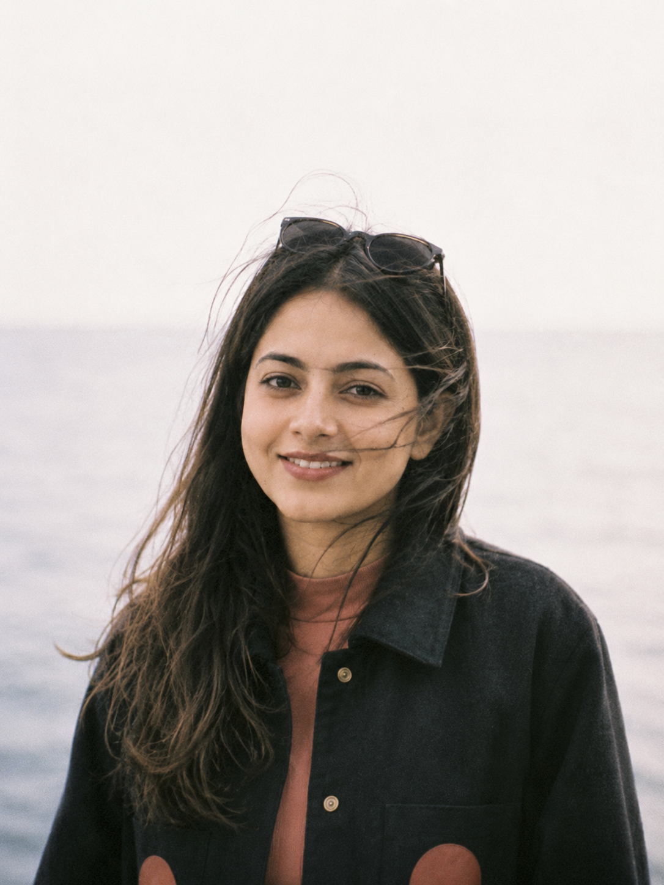

Portrait and painting
Eight ways to pair your portrait with the porch painting, in place of today's stamp poking out of the top. Hover the ones marked “hover”.
0 · Today
The perforated stamp off the top edge, for reference.


1 · Stamp inside
The earlier mock: the same stamp, smaller, sitting inside the bottom-right corner, barely tilted.
2 · Just the portrait
No painting. Calmest; the paintings already live in the Making tile below.
3 · Print behind hover
A small white-bordered print tucked behind the portrait's edge; slides out a little on hover.
4 · Gallery label
The portrait clean, and under it a thumbnail and a mono label, like a wall card.
The porchA painting of mine5 · Two frames
Portrait and painting as two cards side by side, the painting smaller, both bottoms level.
6 · Taped on
A small print held to the corner with a strip of paper tape. Handmade, a little scrapbook.
7 · Round badge
The painting in a small white-ringed circle on the bottom-left corner.
8 · Flip hover
Nothing on the portrait; on hover or focus it turns over to the painting. Still under reduced motion.
The porch, by me